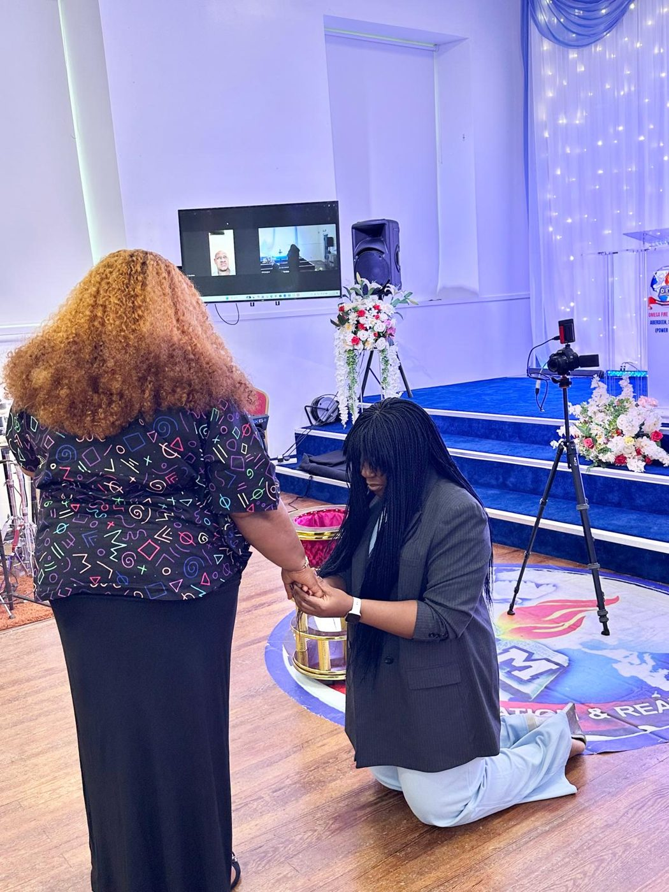

Moments of Glory at the Power House
A glimpse of God's move, from the ministry of Apostle Johnson Suleman to worship in Aberdeen.
Every Picture Tells of His Faithfulness
Ministering the Word
Preaching at OFM Aberdeen
Hands Raised in Worship
Sunday worship at the Power House
Prayer at the Altar
Standing in faith together
Thank You for Worshipping With Us
The Word ministered at the Power House
A Heart of Praise
Worship that rises from the heart
Lifting Up His Name
Ministration in song
Crying Out to God
Intercession at the altar
One Family
Welcoming every worshipper home
A New Generation on Fire
Young people worshipping at the Power House
All Glory to God
Fire on the pulpit

Honour and Blessing
A moment of grace at the altar
The Outpouring 2026
Ministers gathered at The Outpouring 2026
Together in White
Celebrating with the OFM family
Joy in the House
Fellowship and friendship
Apostle Prof. Johnson Suleman
President, Omega Fire Ministries Worldwide
Apostle Johnson & Rev. Dr. Lizzy Johnson Suleman
Our General Overseer and the First Lady
The Restoration Apostle
Ministering fire and power to the nations
A People of Praise
Lifting holy hands in the Granite City
Miracle Crusades Across the Nations
Omega Fire Ministries International
One Family, One Fire
Omega Fire Ministries Aberdeen, Power House
Worship at the Power House
Encounter the presence of God with us